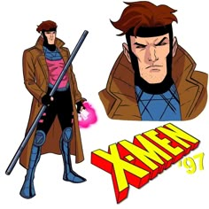

 Gambit, ou Remy LeBeau, é um mutante dos X-Men conhecido por sua habilidade de carregar objetos com energia cinética explosiva, geralmente usando cartas de baralho como sua arma de escolha. Ele nasceu em Nova Orleans e foi criado por uma guilda de ladrões, onde aprendeu habilidades de combate e furtividade. Sua vida foi marcada pelo crime até que ele se redimiu ao entrar para os X-Men. Gambit possui um passado complicado, incluindo sua participação indireta no "Massacre dos Morlocks", o que fez com que sua lealdade fosse questionada por seus companheiros. Além de suas habilidades e charme natural, Gambit é mais conhecido por seu relacionamento amoroso com Vampira. Devido aos poderes dela, que impossibilitam o contato físico, o romance entre eles sempre foi cheio de dificuldades, mas continua sendo um dos relacionamentos mais duradouros dos X-Men.